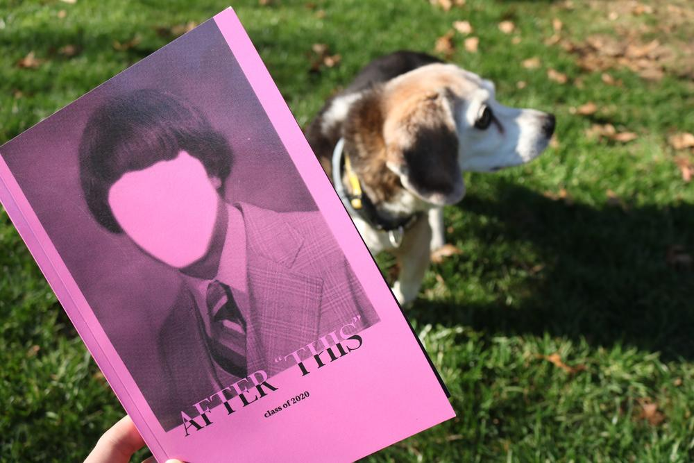
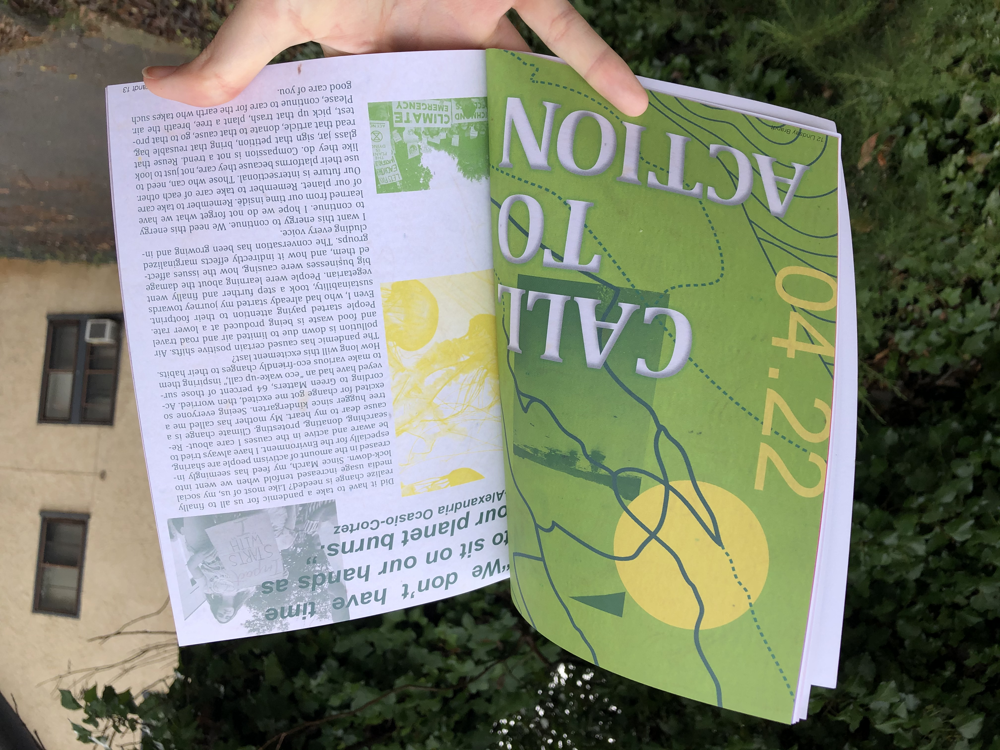

Home
Design & Illustration
Other Works
Resume
After This
- Collaborative Publication
After This was a collaborative publication produced by the Magenta Cohort at Virginia Commonwealth University. The 78-page book explored the questions we had about the uncertain future in a post COVID-19 world. All of the proceeds went directly to the Mutual Aid Disaster Relief in Richmond, Virginia. My personal spread explored the environmental impacts of COVID and how it had opened my eyes to different avenues of injustice. In my design work, I chose to explore texture as well as took inspiration from maps of local parks in Richmond to reflect the themes of nature and preservation.
 